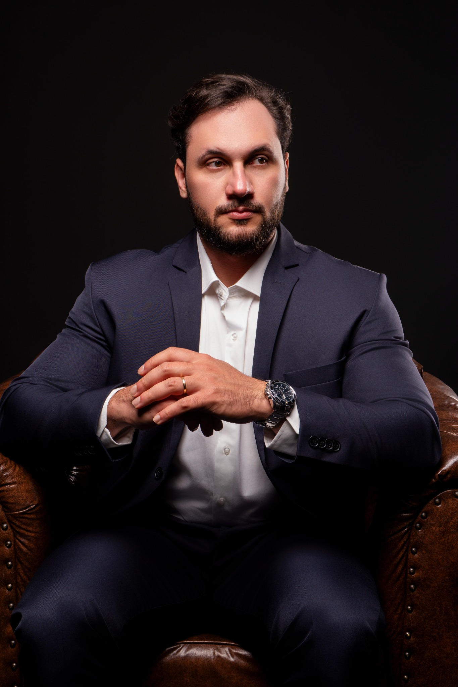
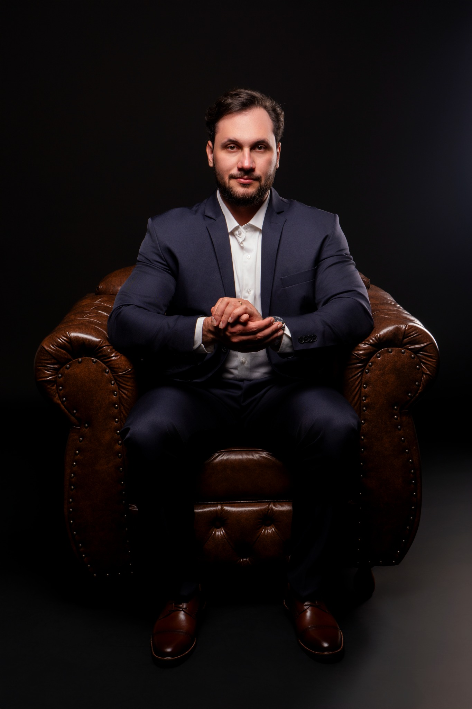

Como donos de escritório de engenharia estão parando de depender de indicação para fechar projeto
Você já entrega projeto bem feito. O mercado já precisa de engenharia. Mas o contrato vai pro concorrente mais barato, e o mês bom termina com lucro mínimo. Assista e veja como mudar isso.
QUERO MEU DIAGNÓSTICOVocê fatura. Mas o mês fecha e sobra pouco.
E quando a indicação para, a agenda esvazia.
E se o próximo contrato viesse de um processo, e não da sorte?
Não é falta de competência técnica. É que ninguém te ensinou a outra metade do trabalho: ser dono de empresa.
Sua excelência técnica não pode ser sua sentença de prisão operacional.

DA OPERAÇÃO À ESTRATÉGIA ↗Você executa. A Ozare constrói junto.
Implementação com direção, acompanhamento e processos construídos para a realidade do seu escritório.
Base do negócio
Público, produto, mercado e marca definidos para o seu escritório.
Captação
Um framework para cada canal: indicação ativa, reativação de base, LinkedIn, Instagram, parcerias e mais.
Proposta comercial
Modelo de proposta e roteiro de condução da venda.
Objeção e follow-up
O que responder quando o cliente diz “tá caro” e como retomar quem sumiu.
Acompanhamento ao vivo
Reuniões todo mês com Rafael, Dafni e Gui.
Medição
Pipeline para saber de onde vem cada contrato e o que corrigir.

“Eu faturei R$ 600 mil e, mesmo assim, estava no prejuízo.”
Foi ali que entendi: faturar muito não é ter empresa. Errei, aprendi e organizei tudo do zero. Esse processo virou o método que hoje aplicamos com cada cliente.
Rafael ZaccariExperiência aplicada a negócios reais.
Antes de dar o próximo passo.
Meu escritório é pequeno, sou só eu e mais um. Funciona?
É exatamente para esse tamanho. O método foi feito para escritórios de 1 a 5 pessoas. Quanto menor a equipe, mais cada contrato pesa, e mais faz falta ter processo.
Já fiz curso e mentoria e não mudou nada.
A Ozare não é curso nem mentoria. É implementação: reunião ao vivo, material construído para o seu escritório e acompanhamento do que foi aplicado.
Meus clientes vêm por indicação e funciona.
79% das empresas que atendemos também dependiam só de indicação. Indicação é ótima até parar. A gente não tira ela de você: transforma em processo e soma outros canais.
Não tenho tempo.
Vai exigir dedicação, sim. Por isso cada etapa vira tarefa com prazo, encaixada na sua rotina de quem ainda está na operação.
Em quanto tempo vejo resultado?
Não prometemos resultado rápido. Cada etapa é implementada, medida e corrigida. Na conversa, a gente olha seu caso e diz o que é realista.
Preciso contratar vendedor ou montar equipe?
Não para começar. O processo é desenhado para a equipe que você tem hoje.
Empresa não se improvisa. Empresa se constrói.
Amanhã você vai abrir o escritório, revisar projeto e responder cliente. A diferença é que, dessa vez, você sabe de onde vem o próximo contrato.
QUERO MEU DIAGNÓSTICOPrévia concluída ✓
O formulário funciona como demonstração. Nenhum dado foi enviado e nenhum diagnóstico foi agendado.
Duração da conversa a confirmar com a equipe. Prévia visual: nenhum dado é transmitido.